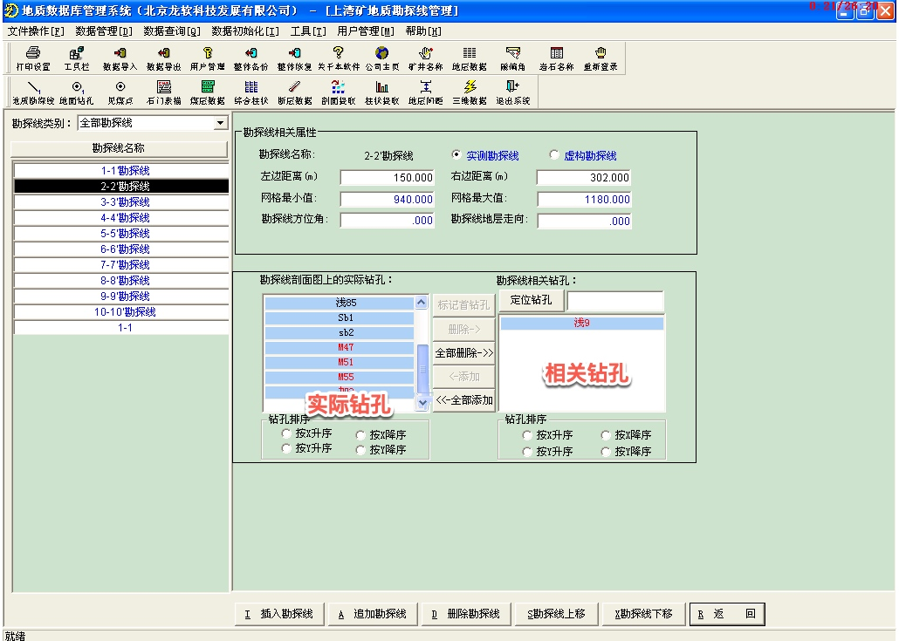
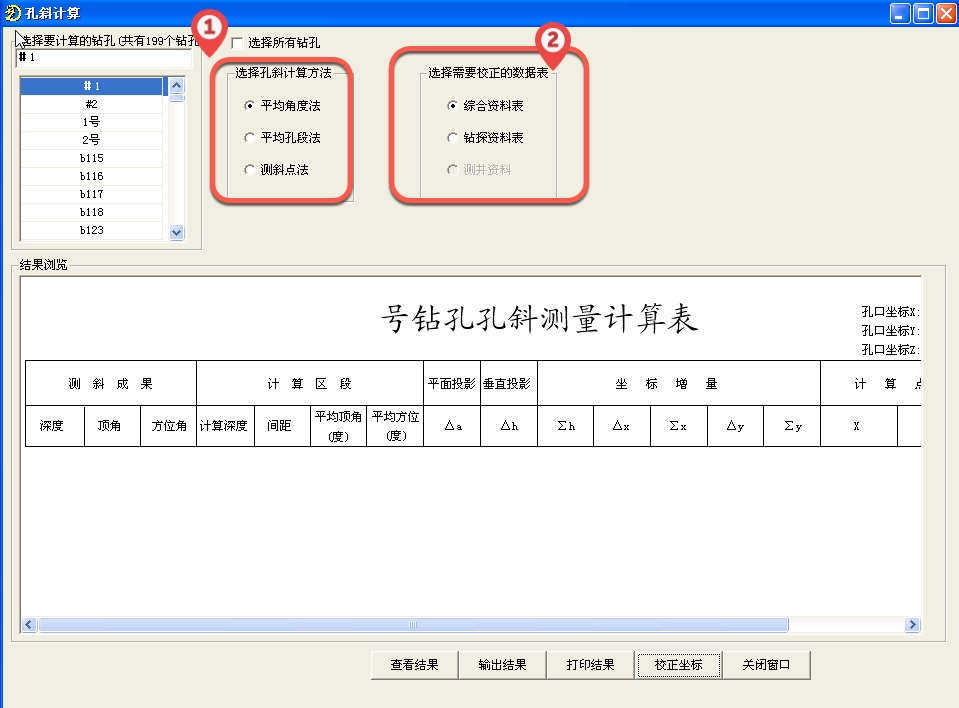
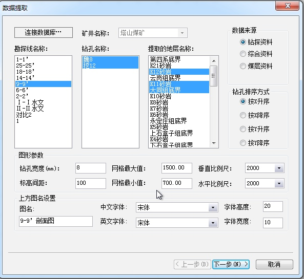
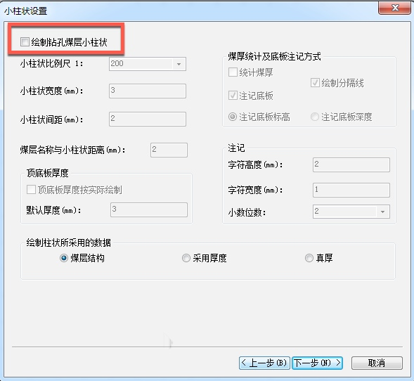
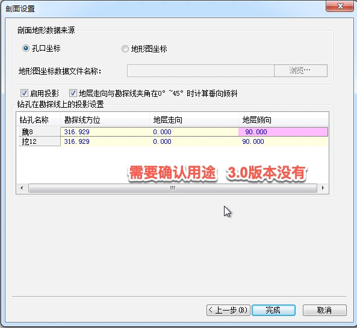
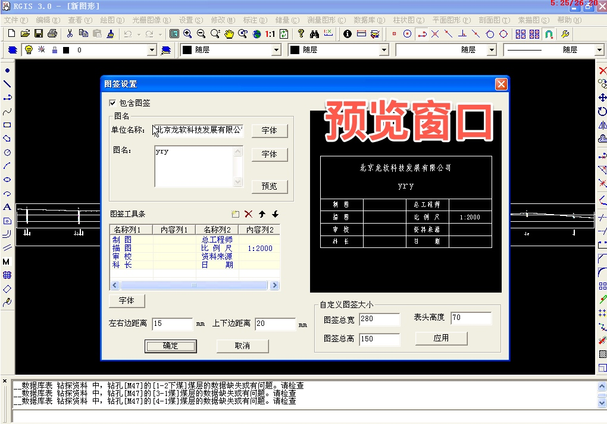
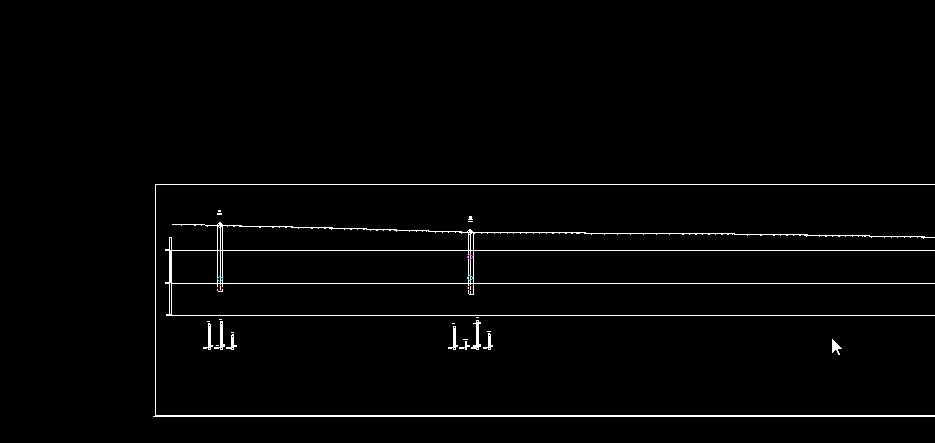
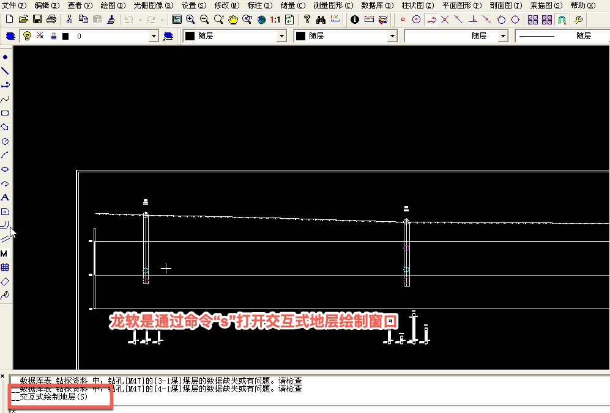
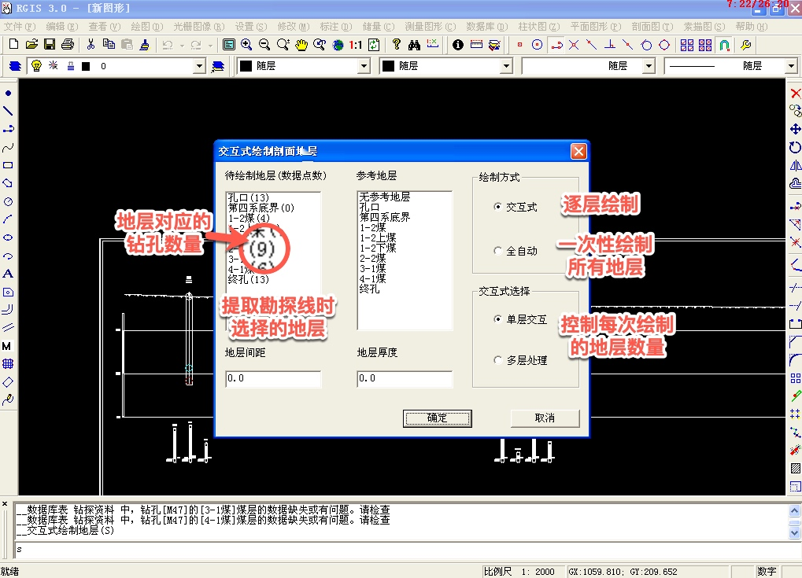
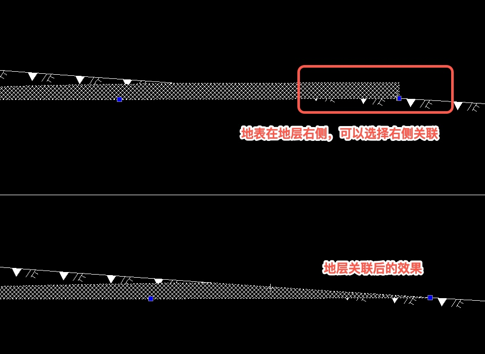

准备工作
确认勘探线钻孔是否正确，根据实际情况增减
设置孔斜计算方法
提取勘探线

1.数据选择流程

2.数据来源
3.钻孔排序方式
4.图形参数网格
最大值最小值可以输入也可以读取钻孔实际数据
设置
小柱状参数，可以选择是否进行绘制
剖面设置
1.孔口坐标
2.地形图坐标,需要导入地形图数据文件剖面信息注意事项
1
2钻孔在勘探线上的投影设置需要确认用途
现有数据库生成剖面图出错，未弹出下一级窗口图签设置
准备工作绘制内容及效果图
准备工作涉及信息
1
2
3
4钻孔
网格
断层资料
小柱状

绘制地层


交互式绘制坡面地层
- 绘制方式
通常选择逐层绘制，方便编辑地层 - 交互式选择
- 地层间距
参考地层与待绘制地层之间的距离 - 地层厚度
- 绘制方式
编辑剖面地层
需要显示修改状态
编辑详细设置
1
2
3
4
5
6
7
8
9
10加点
删除点
移点
修改厚度
统改厚度
截断
设置左侧关联
设置右侧关联
取消左侧关联
取消右侧关联
